18 Lesson 5a: Introduction to ggplot2
Being able to create visualizations (graphical representations) of data is a key step in being able to communicate information and findings to others. In this lesson, you will learn to use the ggplot2 library to make beautiful plots or charts of your data. Although R does provide built-in plotting functions, the ggplot2 library implements the Grammar of Graphics. This makes it particularly effective for describing how visualizations should represent data, and has turned it into the preeminent plotting library in R. Learning this library will allow you to make nearly any kind of (static) data visualization, customized to your exact specifications.
18.1 Learning objectives
By the end of this lesson you will be able to:
- Plot data using various geometric shapes and statistical transformations.
- Manipulate and control the aesthetics of your plots (i.e. colors, scales).
- Put together various ggplot parameters to produce a refined plot with a title, subtitle, proper axis titles, etc.
18.2 Prerequisites
To reproduce the code throughout this lesson you will need to load the ggplot2 package along with a couple others.
library(ggplot2) # for plotting capabilities
library(completejourney) # for data
library(dplyr) # for additional data wranglingThis lesson will also use the Complete Journey data; but before we start we’ll join the transactions data with the products and household demographics data:
df <- transactions_sample %>%
inner_join(products) %>%
inner_join(demographics)
glimpse(df)
## Rows: 42,058
## Columns: 24
## $ household_id <chr> "400", "718", "868", "16…
## $ store_id <chr> "388", "324", "323", "44…
## $ basket_id <chr> "31932241118", "32614612…
## $ product_id <chr> "13094913", "883203", "9…
## $ quantity <dbl> 2, 1, 1, 1, 1, 1, 1, 1, …
## $ sales_value <dbl> 11.87, 2.50, 3.49, 2.50,…
## $ retail_disc <dbl> 2.90, 0.49, 0.00, 0.49, …
## $ coupon_disc <dbl> 0, 0, 0, 0, 0, 0, 0, 0, …
## $ coupon_match_disc <dbl> 0, 0, 0, 0, 0, 0, 0, 0, …
## $ week <int> 8, 15, 10, 47, 18, 37, 4…
## $ transaction_timestamp <dttm> 2017-02-18 13:13:10, 20…
## $ manufacturer_id <chr> "4421", "5072", "1102", …
## $ department <chr> "MEAT", "DRUG GM", "GROC…
## $ brand <fct> National, National, Nati…
## $ product_category <chr> "BEEF", "FIRST AID PRODU…
## $ product_type <chr> "ANGUS BEEF", "BANDAGE/T…
## $ package_size <chr> NA, NA, "8 OZ", "12 OZ",…
## $ age <ord> 35-44, 45-54, 65+, 35-44…
## $ income <ord> 150-174K, 25-34K, 35-49K…
## $ home_ownership <ord> Homeowner, Homeowner, Ho…
## $ marital_status <ord> Married, Married, Marrie…
## $ household_size <ord> 3, 5+, 2, 1, 2, 4, 1, 1,…
## $ household_comp <ord> 2 Adults Kids, 2 Adults …
## $ kids_count <ord> 1, 3+, 0, 0, 0, 3+, 0, 0…18.3 Grammar of Graphics
Just as the grammar of language helps us construct meaningful sentences out of words, the Grammar of Graphics helps us to construct graphical figures out of different visual elements. This grammar gives us a way to talk about parts of a plot: all the circles, lines, arrows, and words that are combined into a diagram for visualizing data. Originally developed by Leland Wilkinson, the Grammar of Graphics was adapted by Hadley Wickham to describe the components of a plot, including
- the data being plotted
- the geometric objects (circles, lines, etc.) that appear on the plot
- a set of mappings from variables in the data to the aesthetics (appearance) of the geometric objects
- a statistical transformation used to calculate the data values used in the plot
- a position adjustment for locating each geometric object on the plot
- a scale (e.g., range of values) for each aesthetic mapping used
- a coordinate system used to organize the geometric objects
- the facets or groups of data shown in different plots
Wickham further organizes these components into layers, where each layer has a single geometric object, statistical transformation, and position adjustment. Following this grammar, you can think of each plot as a set of layers of images, where each image’s appearance is based on some aspect of the data set.
All together, this grammar enables us to discuss what plots look like using a standard set of vocabulary. And similar to how tidyr and dplyr provide efficient data transformation and manipulation, ggplot2 provides more efficient ways to create specific visual images.
18.4 The Basics
In order to create a plot, you:
- Call the
ggplot()function which creates a blank canvas - Specify aesthetic mappings, which specifies how you want to map variables to visual aspects. In this case we are simply mapping the
quantityandsales_valuevariables to the x- and y-axes. - You then add new layers that are geometric objects which will show up on the plot. In this case we add
geom_pointto add a layer with points (dots) elements as the geometric shapes to represent the data.
# create canvas (left)
ggplot(df)
# variables of interest mapped (middle)
ggplot(df, aes(x = quantity, y = sales_value))
# data plotted (right)
ggplot(df, aes(x = quantity, y = sales_value)) +
geom_point()When you add the geom layer you use the addition (+) operator. As you add new layers you will always use + to add onto your visualization.
Just as we’ve seen in the previous lessons, we can continue to use the pipe operator with ggplot. For example, say we want to only plot transactions where the quantity of items purchased was over 100. We can simply apply a filter() statement and then pipe the results directly into ggplot.
Just remember to use the + operator to add new layers to ggplot. It is very common for people to pipe into ggplot and then continue to use the %>% operator to add new ggplot layers. This will result in an error!
18.4.1 Knowledge check
-
Filter for all transactions in the produce
departmentand plot thequantityon the x-axis andsales_valueon the y-axis. -
Filter for all transactions in the meat
departments and plot thequantityon the x-axis andsales_valueon the y-axis. -
Filter for all transactions in the fuel
departments and plot thequantityon the x-axis andsales_valueon the y-axis. - What trends do you notice between the above departments?
18.5 Aesthetic Mappings
The aesthetic mappings take properties of the data and use them to influence visual characteristics, such as position, color, size, shape, or transparency. Each visual characteristic can thus encode an aspect of the data and be used to convey information.
All aesthetics for a plot are specified in the aes() function call (later in this lesson you will see that each geom layer can have its own aes specification). For example, we can add a mapping from the variable household_size to a color characteristic:
Note that using the aes() function will cause the visual channel to be based on the data specified in the argument. For example, using aes(color = "blue") won’t cause the geometry’s color to be “blue”, but will instead cause the visual channel to be mapped from the vector c("blue") — as if we only had a single type of engine that happened to be called “blue”. If you wish to apply an aesthetic property to an entire geometry, you can set that property as an argument within the geom_xxx_() method, outside of the aes() call:
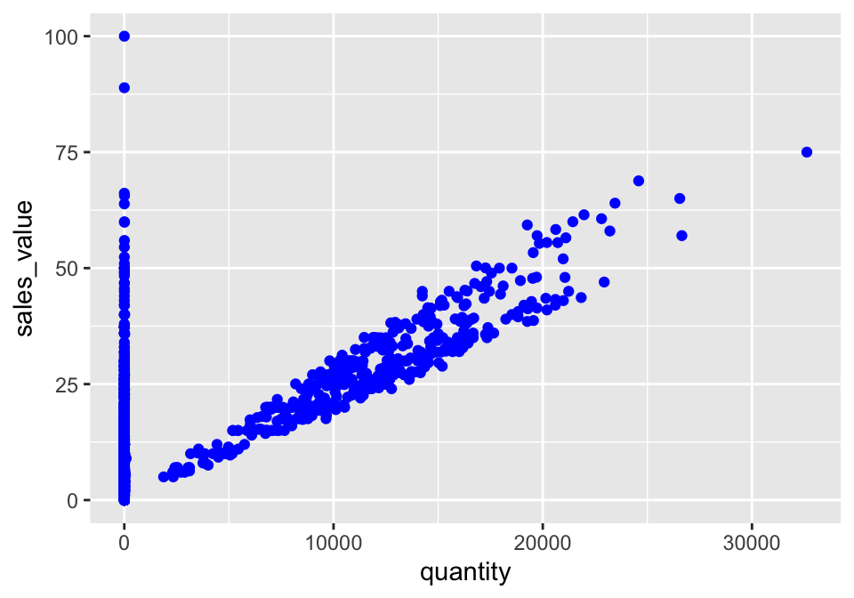
18.5.1 Knowledge check
-
Filter for all transactions in the grocery
department(department == “GROCERY”) and plot thequantityon the x-axis andsales_valueon the y-axis. -
Color all the points in the above plot red. Now color the points in
#1 based on the
household_sizevariable. -
Use
sizeto change the size of all points to 0.5. Now map thehousehold_sizevariable to size withinaes().
18.6 Specifying Geometric Shapes
Building on these basics, ggplot2 can be used to build almost any kind of plot you may want. These plots are declared using functions that follow from the Grammar of Graphics.
The most obvious distinction between plots is what geometric objects (geoms) they include. ggplot2 supports a number of different types of geoms, including:
geom_pointfor drawing individual points (e.g., a scatter plot)geom_linefor drawing lines (e.g., for a line charts)geom_smoothfor drawing smoothed lines (e.g., for simple trends or approximations)geom_barfor drawing bars (e.g., for bar charts)geom_histogramfor drawing binned values (e.g. a histogram)geom_polygonfor drawing arbitrary shapesgeom_mapfor drawing polygons in the shape of a map! (You can access the data to use for these maps by using themap_data()function).
Each of these geometries will leverage the aesthetic mappings supplied although the specific visual properties that the data will map to will vary. For example, you can map data to the shape of a geom_point (e.g., if they should be circles or squares), or you can map data to the linetype of a geom_line (e.g., if it is solid or dotted), but not vice versa.
Almost all geoms require an x and y mapping at the bare minimum.
# Left column: x and y mapping needed!
ggplot(df, aes(x = quantity, y = sales_value)) +
geom_point()
ggplot(df, aes(x = quantity, y = sales_value)) +
geom_smooth()
# Right column: no y mapping needed!
ggplot(df, aes(x = household_size)) +
geom_bar()
ggplot(df, aes(x = sales_value)) +
geom_histogram()What makes this really powerful is that you can add multiple geometries to a plot, thus allowing you to create complex graphics showing multiple aspects of your data.
# plot with both points and smoothed line
ggplot(df, aes(x = quantity, y = sales_value)) +
geom_point() +
geom_smooth()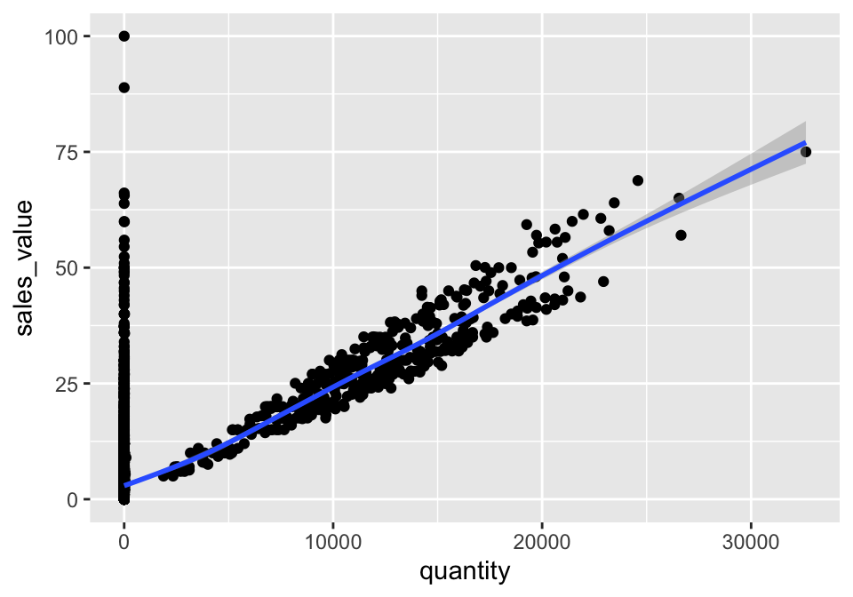
Of course the aesthetics for each geom can be different, so you could show multiple lines on the same plot (or with different colors, styles, etc). It’s also possible to give each geom a different data argument, so that you can show multiple data sets in the same plot.
For example, we can plot both points and a smoothed line for the same x and y variable but specify unique colors within each geom:
ggplot(df, aes(x = quantity, y = sales_value)) +
geom_point(color = "blue") +
geom_smooth(color = "red")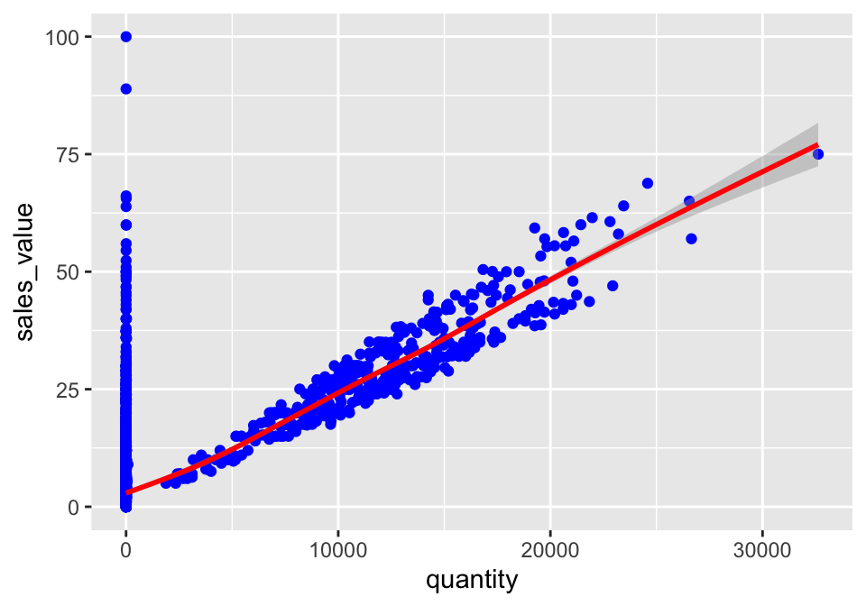
So as you can see if we specify an aesthetic within ggplot it will be passed on to each geom that follows. Or we can specify certain aesthetics within each geom, which allows us to only show certain characteristics for that specific layer (i.e. geom_point).
# color aesthetic passed to each geom layer (left)
ggplot(df, aes(x = quantity, y = sales_value, color = household_size)) +
geom_point() +
geom_smooth(se = FALSE)
# color aesthetic specified for only the geom_point layer (right)
ggplot(df, aes(x = quantity, y = sales_value)) +
geom_point(aes(color = household_size)) +
geom_smooth(se = FALSE)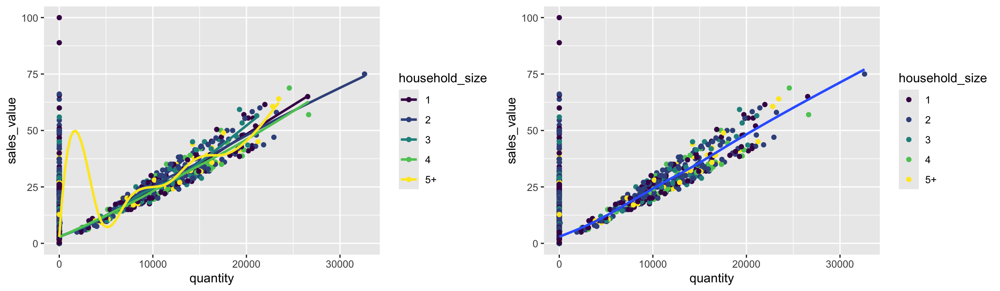
18.6.1 Knowledge check
-
Filter all transactions where
department == “PRODUCE”. Use a boxplot to plot thesales_valueacross each household composition (household_comp). Does it look like the household composition impacts the amount spent on produce? -
Using the same filtered data as in #1, create a scatter plot to
assess
quantityversussales_valueand color the points based on household composition. -
Plot a histogram of the
retail_discount values based on all transactions.
18.7 Statistical Transformations
If you look at the bar chart below displaying the frequency of store IDs, you’ll notice that the the y axis was defined for us as the count of observations for each household_size. This count isn’t part of the data set (it’s not a column in the df data set), but is instead a statistical transformation that the geom_bar automatically applies to the data. In particular, it applies the stat_count transformation.
ggplot2 supports many different statistical transformations. For example, the “identity” transformation will leave the data “as is”. You can specify which statistical transformation a geom uses by passing it as the stat argument. For example, consider our data already had the count as a variable:
household_size_count <- count(df, household_size)
household_size_count
## # A tibble: 5 × 2
## household_size n
## <ord> <int>
## 1 1 12433
## 2 2 16148
## 3 3 6280
## 4 4 3461
## 5 5+ 3736We can use stat = "identity" within geom_bar to plot our bar height values to this variable. Also, note that we now include n for our y variable:
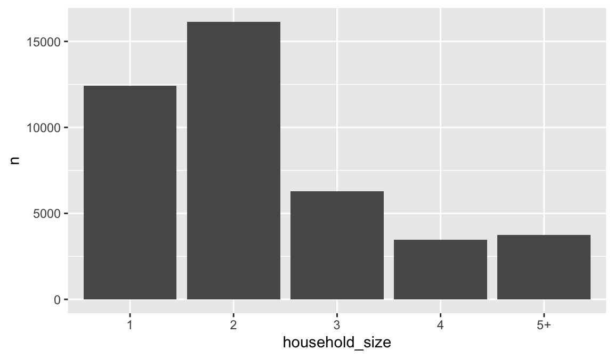
We can also call stat_ functions directly to add additional layers. For example, below is a graph that visualizes the relationship between the total sales value for each basket (aka checkout) across the different income levels. We create a scatterplot of total sales value for each for each basket and then use stat_summary to plot the median total sales value. It appears that there is a slight increase in median checkout sales value as income increases.
df %>%
group_by(income, basket_id) %>%
summarize(total_sale = sum(sales_value)) %>%
ggplot(aes(income, total_sale)) +
geom_point(color = "blue") +
stat_summary(fun = "median", geom = "point", color = "red", size = 2) 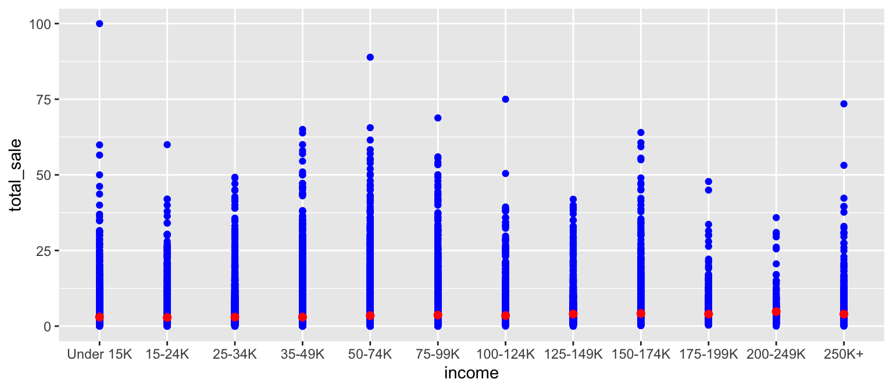
18.7.1 Knowledge check
-
Filter our transactions for only those items in the meat
departmentand usegeom_bar()to plot the number of transactions for eachproduct_category. -
Filter our transactions for only those items in the meat
departmentand you did above but now compute the number of transactions for eachproduct_categoryusingfilter::count(). Usegeom_count()to create the same plot as you got in #1. -
Create a scatter plot comparing
retail_disctosales_value. Now, instead of usinggeom_point()usestat_summary_bin(fun = “mean”, geom = “bar”, orientation = ‘y’). What does this tell you about the relationship betweenretail_discandsales_value?
18.8 Position Adjustments
In addition to a default statistical transformation, each geom also has a default position adjustment which specifies a set of “rules” as to how different components should be positioned relative to each other. This position is noticeable in a geom_bar if you map a different variable to the color visual characteristic. Below is a bar chart that uses color to visualize the proportion of brand purchases (Private represents the stores special private brand and National represents commonly available brands).
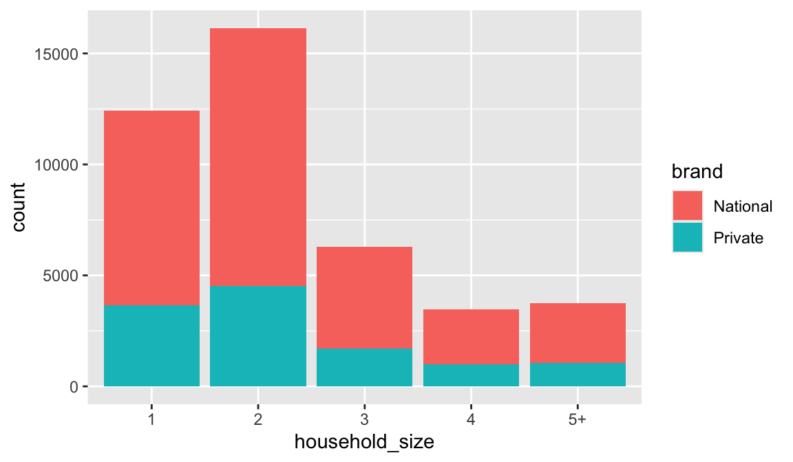
The geom_bar by default uses a position adjustment of "stack", which makes each rectangle’s height proprotional to its value and stacks them on top of each other. We can use the position argument to specify what position adjustment rules to follow:
# position = "dodge": values next to each other
ggplot(df, aes(x = household_size, fill = brand)) +
geom_bar(position = "dodge")
# position = "fill": percentage chart
ggplot(df, aes(x = household_size, fill = brand)) +
geom_bar(position = "fill")
Check the documentation for each particular geom to
learn more about its positioning adjustments.
18.9 Managing Scales
Whenever you specify an aesthetic mapping, ggplot uses a particular scale to determine the range of values that the data should map to. Thus when you specify
# color the data by household_size
ggplot(df, aes(x = quantity, y = sales_value, color = household_size)) +
geom_point()ggplot automatically adds a scale for each mapping to the plot:
# same as above, with explicit scales
ggplot(df, aes(x = quantity, y = sales_value, color = household_size)) +
geom_point()
scale_x_continuous() +
scale_y_continuous() +
scale_colour_discrete()Each scale can be represented by a function with the following name: scale_, followed by the name of the aesthetic property, followed by an _ and the name of the scale. A continuous scale will handle things like numeric data (where there is a continuous set of numbers), whereas a discrete scale will handle things like colors (since there is a small list of distinct colors). If you are trying to use a continuous scale, you must make sure the data is in numeric format and not as a factor or character.
While the default scales will work fine, it is possible to explicitly add different scales to replace the defaults. For example, you can use a scale to change the direction of an axis:
# total area size and spend relationship, ordered in reverse
ggplot(df, aes(x = quantity, y = sales_value)) +
geom_point() +
scale_x_reverse() +
scale_y_reverse()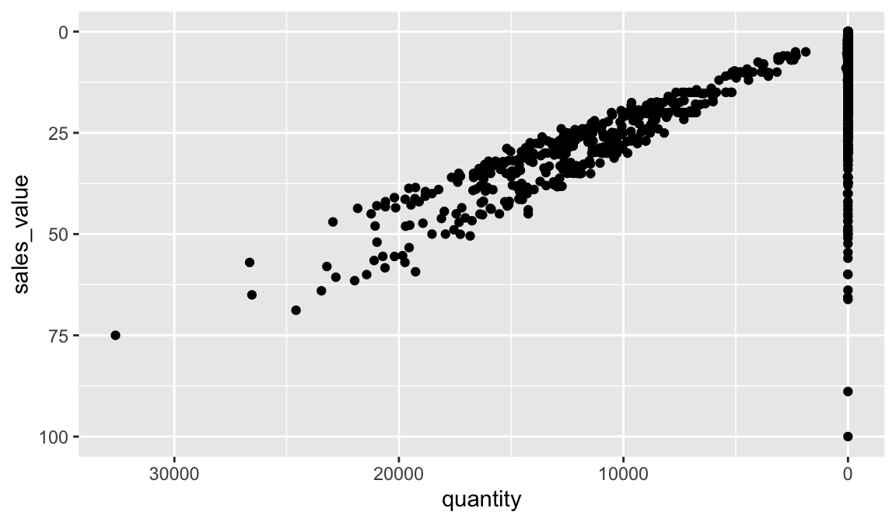
Similarly, you can use scale_x_log10() and scale_x_sqrt() to transform your scale. You can also use scales to format your axes. For example, you can make the y-axis have a percent scale.
ggplot(df, aes(x = household_size, fill = brand)) +
geom_bar(position = "fill") +
scale_y_continuous(breaks = seq(0, 1, by = .2), labels = scales::percent)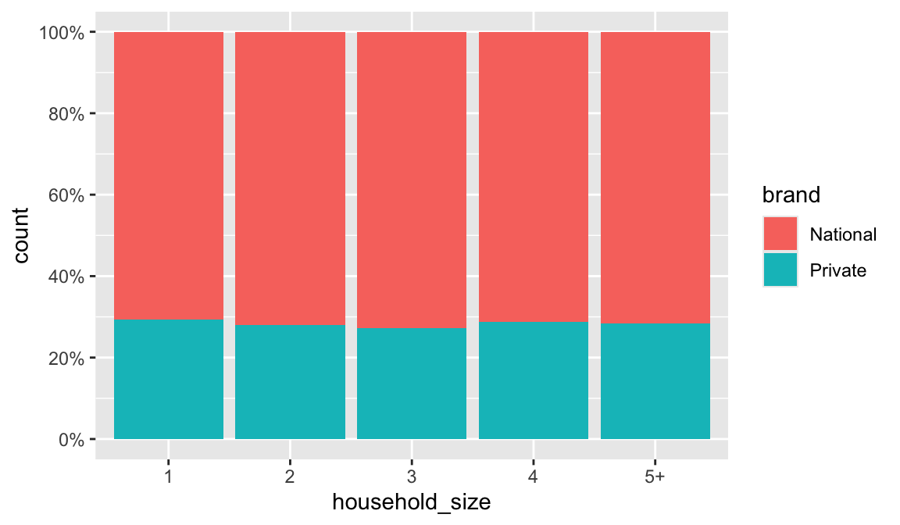
A common parameter to change is which set of colors to use in a plot. While you can use the default coloring, a more common option is to leverage the pre-defined palettes from colorbrewer.org. These color sets have been carefully designed to look good and to be viewable to people with certain forms of color blindness. We can leverage color brewer palletes by specifying the scale_color_brewer() function, passing the pallete as an argument.
# left: default color brewer
ggplot(df, aes(x = quantity, y = sales_value, color = household_size)) +
geom_point() +
scale_color_brewer()
# right: specifying color palette
ggplot(df, aes(x = quantity, y = sales_value, color = household_size)) +
geom_point() +
scale_color_brewer(palette = "Set3")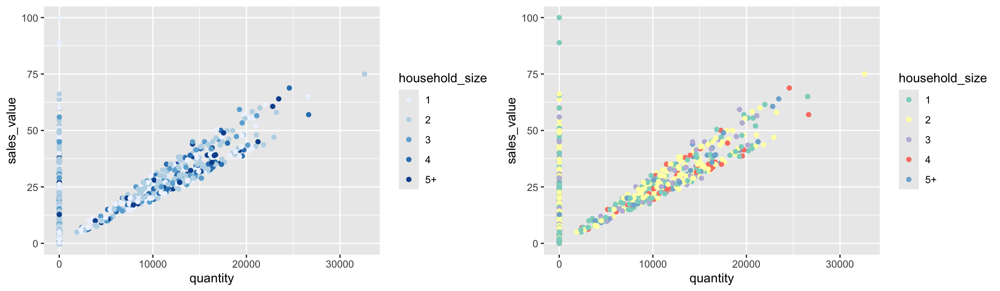
Note that you can get the palette name from the colorbrewer website by looking at the scheme query parameter in the URL. Or see the diagram here and hover the mouse over each palette for the name.
You can also specify continuous color values by using a gradient scale, or manually specify the colors you want to use as a named vector.
18.9.1 Knowledge check
-
Create a scatter plot that plots
quantityvssales_valueacross all transactions. View this plot. Now transform the x-axis to a log transformation usingscale_x_log10(). What new insights does this provide? Now addlabels = scales::commainsidescale_x_log10(). How does this change the formatting? -
Create a scatter plot that plots
sales_valuevsretail_discacross all transactions. View this plot. Now transform the x-axis and y-axis to a log transformation usingscale_x_log10()andscale_y_log10(). What new insights does this provide? Can you figure out how to change the x and y-axes to be formatted as dollar units?
18.10 Coordinate Systems
The next term from the Grammar of Graphics that can be specified is the coordinate system. As with scales, coordinate systems are specified with functions that all start with coord_ and are added as a layer. There are a number of different possible coordinate systems to use, including:
coord_cartesianthe default cartesian coordinate system, where you specify x and y values (e.g. allows you to zoom in or out).coord_flipa cartesian system with the x and y flippedcoord_fixeda cartesian system with a “fixed” aspect ratio (e.g., 1.78 for a “widescreen” plot)coord_polara plot using polar coordinatescoord_quickmapa coordinate system that approximates a good aspect ratio for maps. See documentation for more details.
18.11 Facets
Facets are ways of grouping a data plot into multiple different pieces (subplots). This allows you to view a separate plot for each value in a categorical variable. You can construct a plot with multiple facets by using the facet_wrap() function. This will produce a “row” of subplots, one for each categorical variable (the number of rows can be specified with an additional argument):
You can also use facet_grid to facet your data by more than one categorical variable. Note that we use a tilde (~) in our facet functions. With facet_grid the variable to the left of the tilde will be represented in the rows and the variable to the right will be represented across the columns.
ggplot(df, aes(x = quantity, y = sales_value)) +
geom_point() +
facet_grid(household_size ~ marital_status)18.11.1 Knowledge check
-
Filter for all transactions in the meat
departmentand create a scatter plot comparingquantitytosales_value. -
Build onto the plot in #1 by faceting by
product_categoryusingfacet_wrap(~product_category). What does this plot tell you? -
Build onto the plot in #1 by faceting by
product_categoryandbrandusingfacet_grid(product_category~brand). What does this plot tell you? What’s the difference betweenfacet_wrapandfacet_grid?
18.12 Labels & Annotations
Textual labels and annotations (on the plot, axes, geometry, and legend) are an important part of making a plot understandable and communicating information. Although not an explicit part of the Grammar of Graphics (the would be considered a form of geometry), ggplot makes it easy to add such annotations.
You can add titles and axis labels to a chart using the labs() function (not labels, which is a different R function!):
hshld_by_basket <- df %>%
group_by(basket_id, household_size) %>%
summarize(quantity = sum(quantity), sales_value = sum(sales_value))
ggplot(hshld_by_basket, aes(x = quantity, y = sales_value, color = household_size)) +
geom_point() +
labs(title = "Customer Net Spend by Basket",
subtitle = "Household transaction data covering 2016-2017.",
x = "Quantity of items in each basket",
y = "Total net spend per basket ($)",
color = "Household size")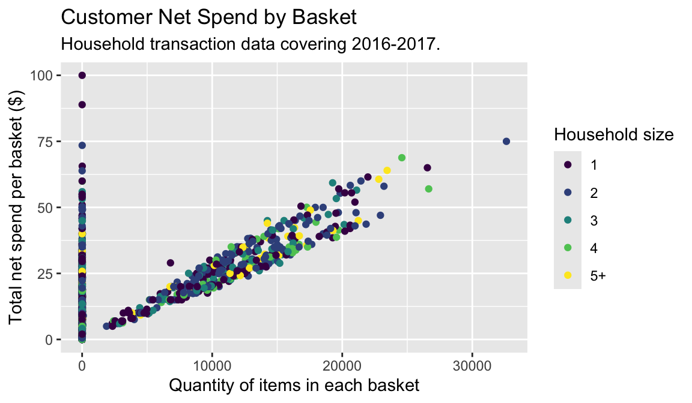
It is also possible to add labels into the plot itself (e.g., to label each point or line) by adding a new geom_text or geom_label to the plot; effectively, you’re plotting an extra set of data which happen to be the variable names:
top_baskets <- hshld_by_basket %>%
ungroup() %>%
slice_max(sales_value, n = 10)
ggplot(hshld_by_basket, aes(x = quantity, y = sales_value)) +
geom_point(aes(color = household_size)) +
geom_label(data = top_baskets, aes(label = basket_id))However, note that many labels overlap one-another in the center of the plot and some labels hang off the page. We can use the geom_label_repel function from the ggrepel package to help position labels.
library(ggrepel)
ggplot(hshld_by_basket, aes(x = quantity, y = sales_value)) +
geom_point(aes(color = household_size)) +
geom_label_repel(data = top_baskets, aes(label = basket_id))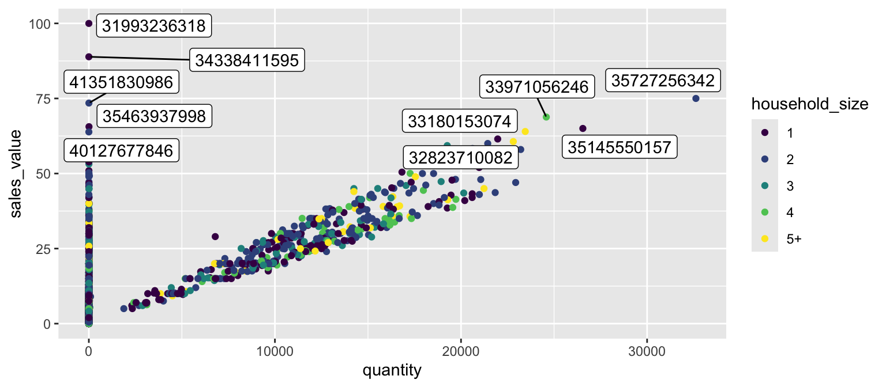
18.12.1 Knowledge check
# exercise data
hshld_df <- df %>%
group_by(household_id) %>%
summarize(
total_sales = sum(sales_value),
total_quantity = sum(quantity)
) %>%
mutate(dollar_per_item = total_sales / total_quantity)Using the data above:
- Create a bar plot of the top 10 households that spend the most per item purchased? Refine this plot by adding a title and better x and y-axis names.
-
Create a scatter plot that compares
total_quantitytototal_sales. Log transform the x and y axis. Refine this plot by adding a title and better x and y-axis names.
18.13 Exercises
-
Identify all different products that contain “pizza” in their
product_typedescription. - Use a bar plot to assess whether married versus unmarried customers purchase more pizza products.
-
Create a scatter plot to assess the
quantityversussales_valueof pizza products sold. -
Now facet the scatter plot in #3 by
product_category. Do the results surprise you?
18.14 Additional Resources on ggplot2
This gets you started with ggplot2; however, this a lot more to learn. The following resources provide additional avenues to learn more:
- gglot2 Documentation (particularly the function reference)
- ggplot2 Cheat Sheet (see also here)
- Data Visualization portion of R for Data Science Book
- ggplot2 book
- A Layered Grammar of Graphics
- ggplot2 extensions that will give you even more capabilities such as interactive plots, mapping, etc!